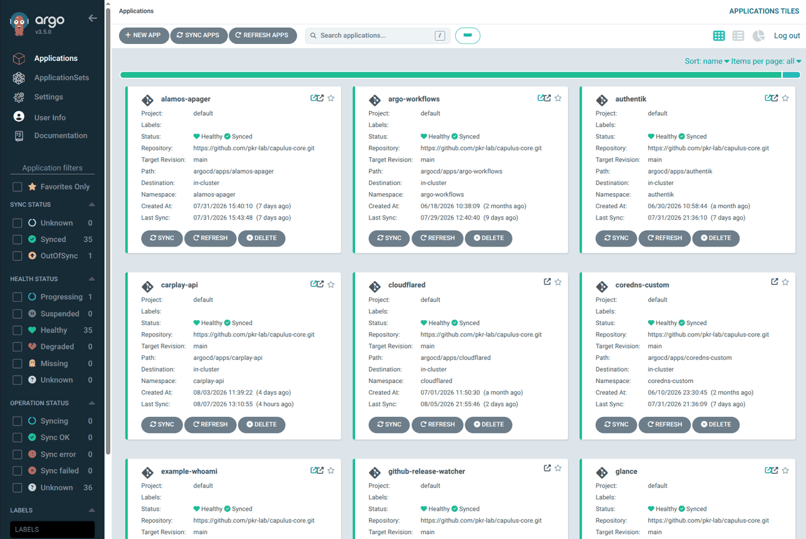
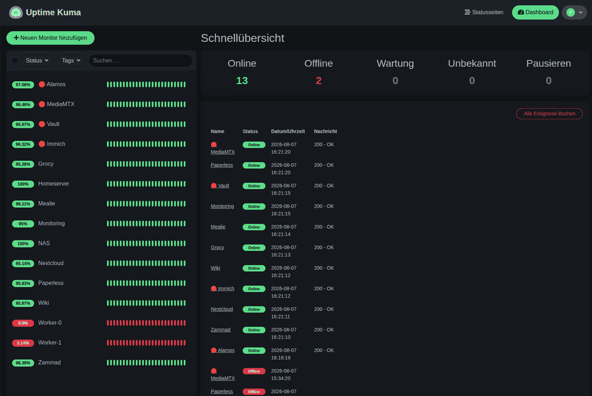
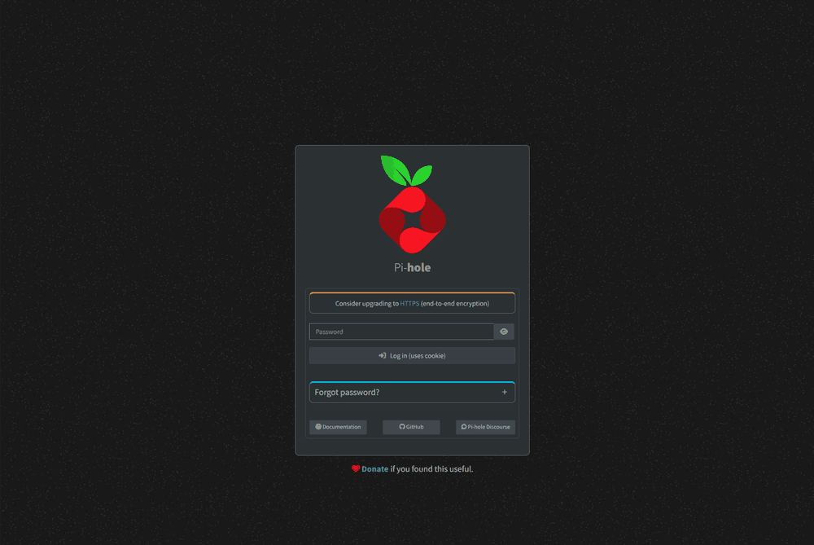
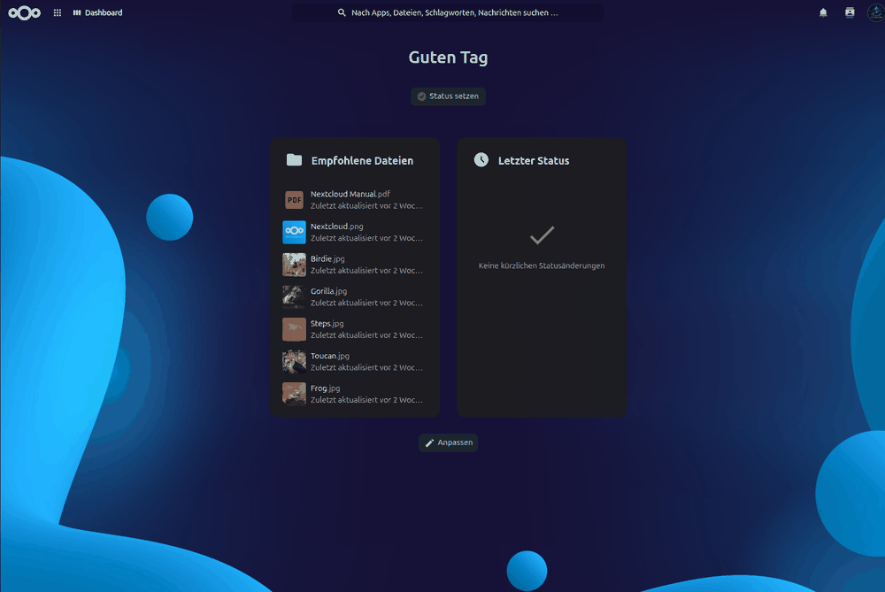

capulus-core
GitOps-Repository: ArgoCD-Apps für TECH, PROD und ENTW, Promotion-Kette, Token-Register und Hilfsskripte.
ArgoCDHelm
Auf GitHub
Projekt
Ansible, drei k3s-Cluster, ArgoCD und Tailscale bilden zusammen ein produktionsreifes GitOps-Homelab – verteilt auf mehrere Repositories, reproduzierbar, dokumentiert und mit null offenen Ports nach außen.
Infrastruktur
Den Anfang macht das Repository capulus-ansible: Seine Playbooks installieren ein gehärtetes Ubuntu Server 26.04 LTS mit UFW-Firewall und CrowdSec, richten die drei k3s-Cluster TECH, PROD und ENTW ein – inklusive Traefik als Ingress und CoreDNS – und legen damit das Fundament für alles Weitere. Kein manuelles Geklicke, keine Doku, die nach zwei Monaten nicht mehr stimmt: Jeder Schritt steht im Playbook.
GitOps-Workflow
ArgoCD überwacht das Verzeichnis argocd/apps/ in capulus-core und synchronisiert jede Änderung automatisch in den passenden Cluster – ganz ohne kubectl apply von Hand. Eine neue App hinzuzufügen heißt: Ordner unter argocd/apps/<cluster>/ anlegen, Kubernetes-YAML oder Helm-Chart hineinlegen, per Pull Request nach main bringen. Nach dem Merge läuft sie in ihrem eigenen Namespace.
Drei Cluster
Jede App liegt unter argocd/apps/tech/ (Infrastruktur und Betriebsdienste: Secrets, Netzwerk, Monitoring, CI/CD), argocd/apps/prod/ (Apps mit echtem Nutzerkreis: Familie, Vereinsmitglieder) oder argocd/apps/entw/ (Entwicklung und Tests). Die Trennung zieht sich bis in ArgoCD und die URL selbst durch: je Cluster ein eigenes AppProject, das nur in seine eigenen Namespaces deployen darf, und ein Tier-Label in jedem Hostnamen. Neue Versionen laufen erst auf ENTW und wandern nach bestandenem Gesundheits-Gate per Pull Request nach TECH und PROD.
destinationsLive-Prinzip
Bewege dich mit der Maus über die Vorschau oder scrolle die Seite, um den 3D-Effekt zu erleben – ein echter Blick ins ArgoCD-Dashboard, das nach jedem Push automatisch synchronisiert.




Echte Screenshots aus dem laufenden Cluster: Uptime Kuma, Pi-hole und Nextcloud.
Repositories
capulus-core ist der Kern, aber nicht mehr alles in einem Repo: Hosts, App, Doku, Wiki-Sync und Operator leben in eigenen Repositories mit eigenen Releases. Zur Ausfallsicherheit spiegele ich alle GitHub-Repositories zusätzlich nach GitLab: Fällt GitHub aus, bleibt der Code dort erreichbar.
GitOps-Repository: ArgoCD-Apps für TECH, PROD und ENTW, Promotion-Kette, Token-Register und Hilfsskripte.
Playbooks und Rollen für Ubuntu-Hosts, die drei k3s-Cluster, Kiosk-Raspberry-Pis und Host-Dienste.
SwiftUI-App „Homeserver Dashboard“ für iPhone und iPad: Alarme, Host-Metriken und Dienststatus.
Die gesamte Dokumentation: Installation, Betrieb, Hintergründe und Incident-Berichte.
Spiegelt die Doku automatisch als Seitenbaum nach Wiki.js und hält sie aktuell.
Kubernetes-Operator: löst CronJobs und manuelle Abläufe über deklarative Ressourcen aus, aktuell Backups mit restic für SQLite und Postgres.
Jede Änderung geht per Push und Pull Request nach GitHub. Von dort wird das Repository automatisch nach GitLab gespiegelt, damit der Code auch bei einem GitHub-Ausfall erreichbar bleibt.
Sicherheit & Netzwerk
Zugriff gibt es ausschließlich über mein eigenes Tailscale-Tailnet oder gezielt über einen Cloudflare Tunnel – niemals über direkt aus dem Internet erreichbare Ports.
UFW erlaubt nur SSH, HTTP/S, die k3s-API, Flannel und Tailscale – der Rest bleibt zu.
Ansible Vault für die Provisionierung, Sealed Secrets für alles, was danach in Git landet.
APT-Security-Patches und k3s aktualisieren sich selbstständig – inklusive Reboot bei Bedarf. Chart- und Image-Updates kommen per Renovate und laufen erst durch ENTW und TECH, bevor sie PROD erreichen.
Hardware
Der TECH-Cluster läuft auf dem Homeserver, PROD und ENTW laufen als KVM-VMs darauf und auf worker-1. Für einen Nachbau von TECH reicht laut Projekt eine kleine Box mit 4 GB RAM und 20 GB Speicher.
k3s Server-Node (Control Plane) des TECH-Clusters – läuft dauerhaft als Homeserver und hostet die PROD-VM.
k3s Worker-Node worker-0 – Standby, fährt bei steigender Last automatisch hoch.
k3s Worker-Node worker-1 – Standby, fährt bei steigender Last automatisch hoch. Hostet die ENTW-VM.
Unmanaged Gigabit-Switch, verbindet alle Nodes im Homelab-Netz.
4-Bay-NAS: NFS-Speicher für alle Cluster (RAID1), Backups und kalte Daten, getrennt vom Cluster.
Zusätzliches Offline-Backup außerhalb des NAS – für den Fall der Fälle.
Im Ruhebetrieb reicht der Homeserver für alle Standard-Workloads. Steigt die Last, fährt er worker-0 und worker-1 automatisch hoch und verteilt Pods über den k3s-Scheduler neu – sinkt sie wieder, fahren beide zurück in den Standby.
Vereinfachte, animierte Darstellung des Prinzips – kein Live-Datenfeed.
Der komplette Code, alle Ansible-Rollen und über 150 Doku-Seiten liegen offen auf GitHub – MIT-lizenziert, forkbar, ohne Anmeldung.